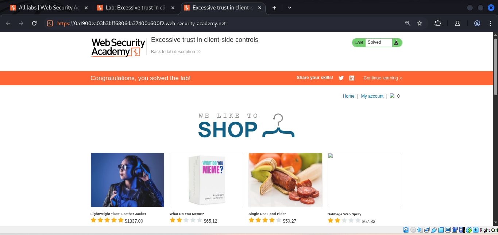
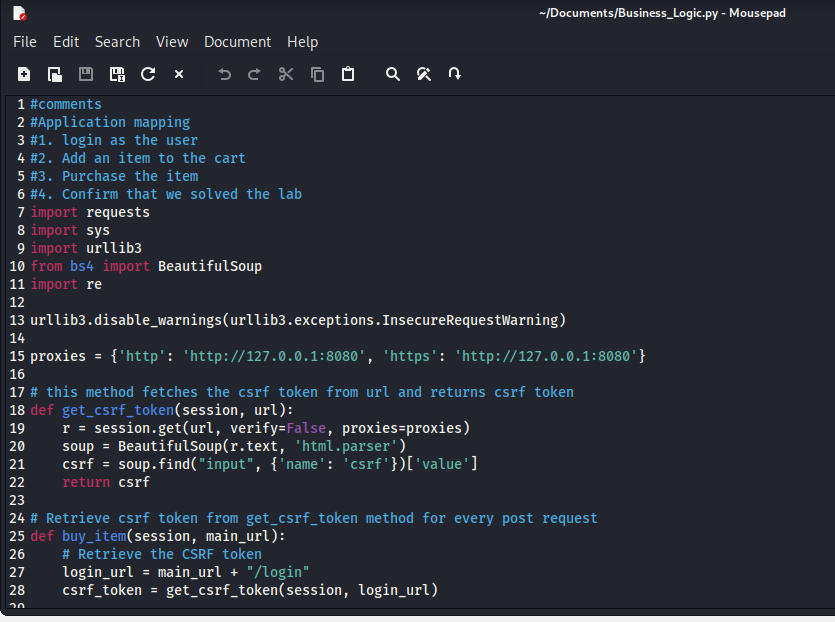
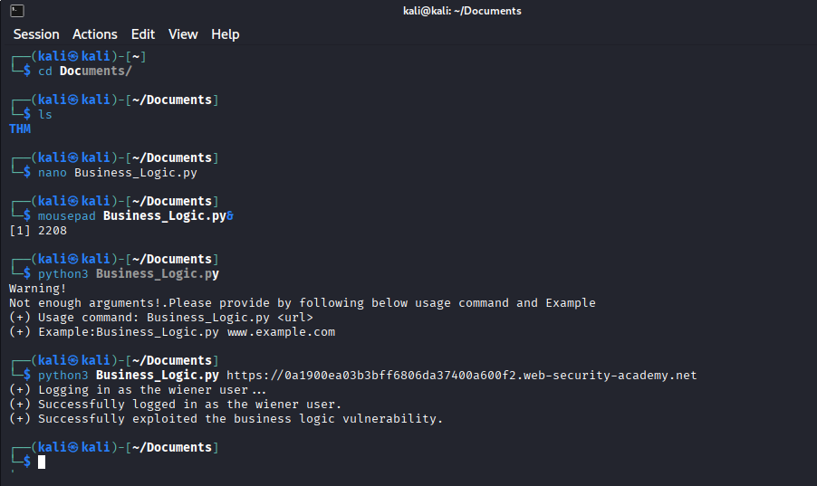
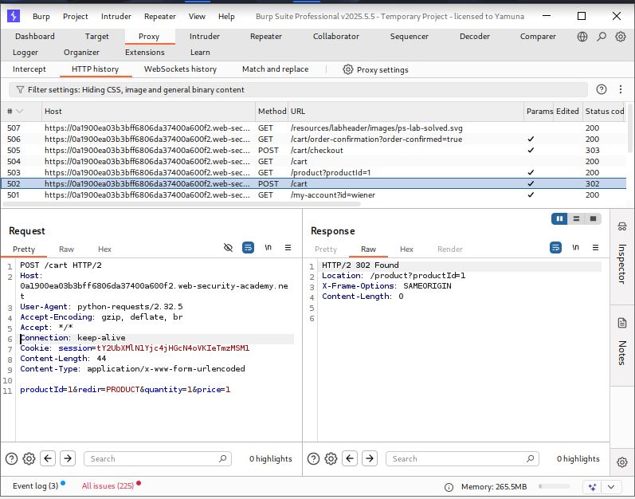
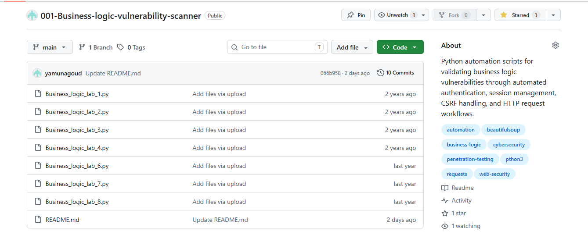

Developed Python automation scripts to streamline business logic testing by automating authentication workflows, session management, CSRF token extraction, and HTTP request manipulation while solving PortSwigger Web Security Academy labs.
Labs Automated
Python Scripts
Automation Workflows
Python Based
Business logic vulnerabilities often require repetitive manual actions such as authenticating users, maintaining sessions, extracting CSRF tokens, and sending crafted HTTP requests. This project automates these repetitive workflows using Python, reducing manual effort and improving efficiency during web application security assessments.
The automation scripts were developed while solving multiple PortSwigger Web Security Academy business logic labs and are designed to demonstrate practical web application security automation techniques.
Automate login workflows for authenticated testing.
Automatically extract and submit dynamic CSRF tokens.
Maintain authenticated sessions across multiple HTTP requests.
Automate crafted GET and POST requests during testing.
Reduce repetitive manual testing through reusable automation scripts.
Create reusable Python modules for future assessments.
The automation scripts follow a structured workflow to simulate authenticated user interactions and automate repetitive business logic testing tasks.
Send login credentials and establish an authenticated session with the application.
Parse HTML responses using BeautifulSoup to retrieve dynamic CSRF tokens.
Reuse session cookies to ensure authenticated communication across multiple requests.
Send crafted GET and POST requests to execute business logic testing scenarios.
Verify responses and confirm successful execution of the intended business logic workflow.
The screenshots below demonstrate different stages of the automation workflow, including Burp Suite analysis, Python automation scripts, terminal execution, HTTP requests, and successful completion of PortSwigger business logic labs.

Successful completion of a PortSwigger Business Logic lab.

Reusable Python script automating authentication and HTTP requests.

Automation executed successfully from the command line.

Intercepted and analyzed HTTP requests during testing.
Validated successful exploitation of the business logic scenario.

Source code and documentation hosted on GitHub.
Automated user authentication by securely handling login requests and maintaining authenticated sessions for subsequent interactions.
Extracted dynamic CSRF tokens from HTML responses using BeautifulSoup and automatically included them in subsequent requests.
Managed session cookies using Python Requests to ensure uninterrupted authenticated communication across multiple HTTP requests.
Designed reusable Python scripts that reduced repetitive manual testing while solving multiple business logic scenarios.
Developed reusable Python scripts to automate repetitive business logic testing tasks across multiple PortSwigger Web Security Academy labs.
Automated login workflows, session management, and authenticated HTTP requests using Python Requests.
Implemented automatic extraction and submission of dynamic CSRF tokens using BeautifulSoup for secure request processing.
Minimized repetitive manual effort by automating common testing workflows while validating business logic vulnerabilities.
This project strengthened my understanding of web application security automation by combining Python scripting with practical penetration testing workflows. I gained hands-on experience automating authentication, maintaining sessions, extracting CSRF tokens, and interacting with web applications through crafted HTTP requests.
Building reusable automation scripts improved the efficiency of repetitive testing tasks and reinforced the importance of understanding application workflows when assessing business logic vulnerabilities.
This project demonstrates practical web application security automation by combining Python scripting with authenticated HTTP workflows. Through reusable automation scripts, I streamlined authentication, session management, CSRF token extraction, and business logic testing across multiple PortSwigger Web Security Academy labs. The project highlights my ability to apply programming skills to offensive security tasks and build efficient tools that reduce repetitive manual testing.